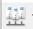
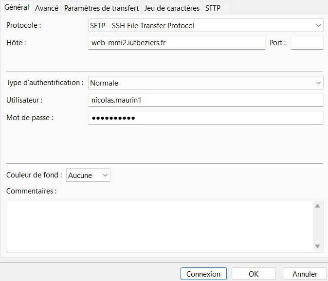
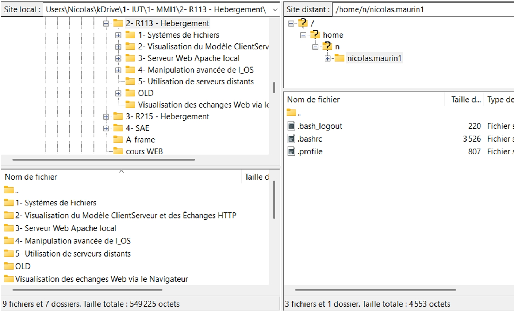
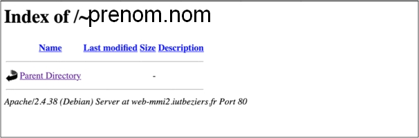

Exercice 1
Découverte de l'environnement et des outils
L'objectif de ce TP est que vous découvriez la notion de serveurs WEB et que vous arriviez à mettre vos premières pages HTML en ligne, en utilisant l'hébergement fourni par l'IUT.
Ton espace web et le nom d'hôte
Tout d'abord, notez ci-après l'URL correspondant à l'espace web mis à votre disposition :
en remplaçant login par votre login de l'IUT de
Béziers (utilisé pour vous connecter sur les machines). Si tu as
saisi ton login en haut de la page, c'est déjà fait.
Testez cette URL. Cette dernière ne marche pas pour l'instant (erreur Not Found) : il n'y a rien sur cet espace. Il nous faut tout d'abord importer des fichiers vers cet espace.
À partir de l'URL, il est facile de trouver le nom de la machine
hébergeant le serveur Web : il suffit d'enlever le protocole,
http://, et tout ce qui est après le premier
/ (en incluant le /).
Question : quel est le nom de la machine hébergeant le serveur web ?
Un indice ?
Pars de , raye
http:// puis tout ce qui suit le
/ suivant. Le découpage interactif de la page
Concepts peut aider.
Ce nom est aussi appelé nom d'hôte. Cette terminologie est à retenir.
1.1 Utilisation d'un client FTP : le principe
FTP, acronyme de File Transfer Protocol, est un protocole de transfert de fichier. Il permet de recevoir, mais surtout d'envoyer des fichiers vers d'autres machines. C'est un service qui tourne en totale indépendance du Web, ils ne sont pas liés.
Notez 2 points essentiels (clique pour retourner les cartes) :
La communication suit donc un schéma logique client-serveur : il faut qu'un client sollicite un serveur pour que ce dernier lui réponde (voir l'animation de la page Concepts).
En plus d'un serveur Web, la machine web-mmi2 dispose
de son propre serveur FTP. Il sera donc possible de s'y connecter si
on a un client FTP sur son ordinateur.
Question : quels sont les clients FTP les plus populaires aujourd'hui ? Cherchez sur internet le nom de 2 ou 3 clients FTP.
Vérifier que l'un de ces clients est disponible sur votre poste de travail (ou en installer un sur votre ordinateur personnel si vous utilisez ce dernier).
Se connecter au serveur FTP de web-mmi2
Lancer le client FTP, créer une nouvelle connexion en cliquant sur l'icône

(gestionnaire de sites) et rentrer les informations suivantes :| Champ | Valeur |
|---|---|
| Hôte | web-mmi2.iutbeziers.fr |
| Protocole | FTP |
| Port | 21 |
| Login (utilisateur) | votre login IUT de Béziers : |
| Password | votre mot de passe IUT de Béziers |

FTP ou SFTP ?
La capture ci-dessus montre le protocole SFTP
(transfert chiffré via SSH, port 22). Si la connexion
FTP sur le port 21 est refusée, choisis SFTP et laisse le port
vide : le reste ne change pas.
Si la connexion réussit, vous vous retrouvez généralement sur une fenêtre présentant conjointement l'arborescence de fichiers de votre disque dur local, et celle du disque du serveur. Clique sur les pastilles pour découvrir chaque zone :

Clique sur une pastille orange.
- Site local : chemin sur ton ordinateur.
- Arborescence locale.
- Contenu du dossier local.
- Site distant : chemin sur le serveur.
- Arborescence distante.
- Contenu du dossier distant.
- Barre d'état.
À partir de cette interface, il vous est possible d'envoyer des fichiers vers la machine hébergeant le serveur FTP (et réciproquement), d'y créer des répertoires, de naviguer dans l'arborescence de fichiers…
Entraînement : le simulateur de client FTP
Avant de le faire pour de vrai, entraîne-toi dans ce faux client FTP. Il ne se connecte à rien : aucun mot de passe ne quitte la page. Le petit navigateur en bas montre ce que le serveur web renverrait.
Site local (ton ordinateur)
Site distant (web-mmi2)
Créer le répertoire public_html
Votre espace personnel sur la machine distante est le répertoire
(où
login est votre login, et l la première
lettre de votre login).
Un élément spécifique, particulier à la machine de l'IUT de Béziers,
est que l'ensemble de vos pages HTML doit être contenu dans le
répertoire public_html. C'est un répertoire
particulier, qui n'existe pas encore.
Question : créez le répertoire public_html dans
votre espace personnel. Puis avec un navigateur visitez votre
espace web.
Dans le client FTP : clic droit dans le panneau distant >
Créer un dossier, nom exact public_html
(minuscules, tiret bas), directement dans
.
Vous devez tomber sur un site vide, avec un affichage similaire à celui présenté sur la capture d'écran ci-dessous :

Ce n'est pas ce que j'obtiens…
-
Not Found : le dossier est mal nommé
(
Public_html,public-html…), mal placé (dans un sous-dossier), ou le login dans l'URL est erroné. -
Forbidden : les droits du dossier sont trop
restrictifs. Clic droit sur
public_html> Droits d'accès au fichier >755. - Toujours rien ? Voir la page Mémo.
🎉 Félicitations
Vous avez à présent un espace web sur lequel vous allez pouvoir déposer des pages HTML - via le protocole FTP - et les consulter sur un navigateur - via le protocole HTTP.
1.2 Dépôt et consultation de pages HTML
En réutilisant des travaux réalisés dans les autres modules, déployez un petit site web sur votre espace.
Avant d'envoyer : les pièges classiques
-
La page d'accueil doit s'appeler
index.htmlet être directement danspublic_html. -
Le serveur distingue majuscules et minuscules :
Photo.JPGn'est pasphoto.jpg. - Pas d'espaces ni d'accents dans les noms de fichiers.
-
Liens et images en chemins relatifs
(
img/photo.jpg), jamaisC:\Users\.... -
Envoie aussi les dossiers
css/,img/,js/…
Colle ici l'URL de ton site en ligne, puis vérifie-la :
Vérification
- Ton site s'affiche, avec sa mise en forme et ses images.
- Les liens entre pages fonctionnent.
- Montre ton URL à ta voisine ou ton voisin : ton site s'affiche aussi sur son poste.